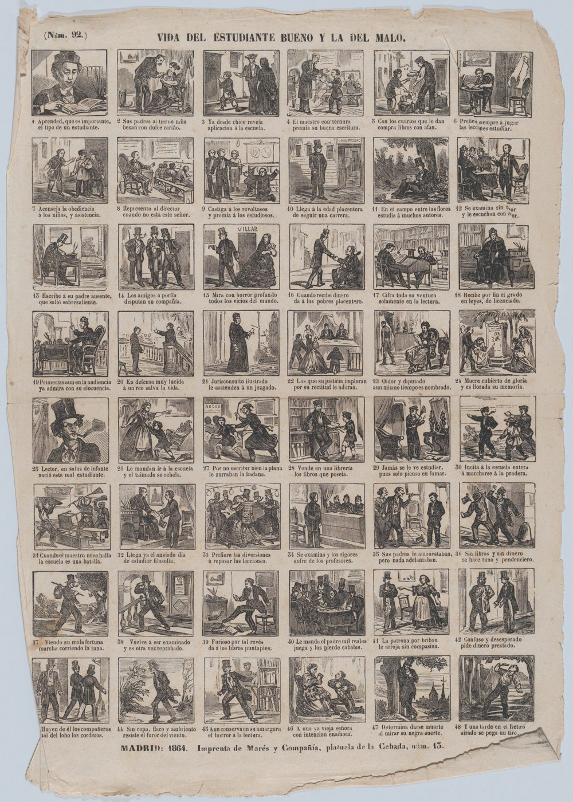
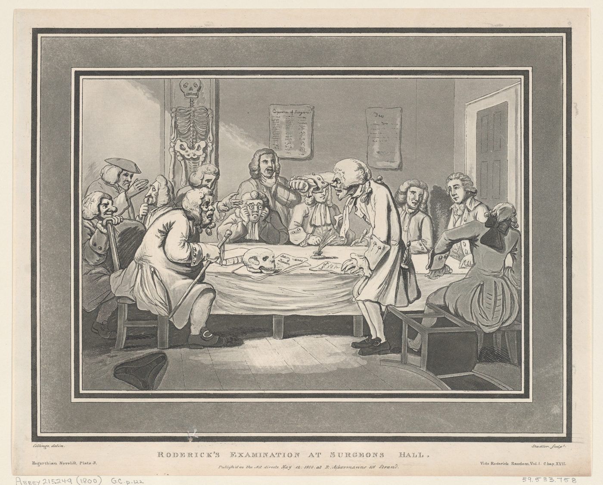

How much of each test it read
Share of each test found word for word in its reading, with 95% ranges. Exact matching misses reworded copies, so these are lower limits.
A student’s grades rise all term. Did they learn the subject, or find last year’s exam? We check the same thing for an AI.
We searched everything the AI read for 5,214 test questions and 5,153 story passages, then found the moment it read each one.
So far, having read a passage has not made the AI better at it. That is a first look; the real test, passage by passage, comes next.

Much of what Pythia read was whole books. Copies of these test items were inside them. Each slip shows the item, its answer, and the training step at which the AI first read it.
Share of each test found word for word in its reading, with 95% ranges. Exact matching misses reworded copies, so these are lower limits.
Each dot is a question; the bars count LAMBADA’s 1,107 dated passages. The study needs items first read in the shaded middle of training.
Shaded bands are 95% ranges. Moving right means more training.
88.2percent right on SciQ, school science. Guessing scores 25.
73.9on PIQA, everyday common sense. Guessing scores 50.
64.7on LAMBADA, finishing a story with its last word.
64.4on ARC-Easy, grade-school science exams.
26.1on MMLU, a university exam. Barely above guessing, so we leave it out.
Final scores of Pythia 2.8B, the largest model we study, published by EleutherAI.
How the scores grow as each model reads more. Scores published by EleutherAI, the makers of Pythia.
Finding a question in the AI’s reading is not proof that reading it raised the score. The test compares each question with itself, before and after the moment it was read.

The test, step by step
Find
Search the AI’s reading for each question5,214 + 5,153
Find the step at which it was reade.g. 23,734
Measure
Score the AI before and after that step30 snapshots
Do the same for look-alikes it never readmatched
Check
Was it already rising before?warning
Does reading it twice help more?copies
Did reading it cause a jump?weeks 6–8
Made-up data, where we planted a jump of 1.5, to show the method finds it.
For each test question we find in its reading material, we pick similar questions of the same difficulty that never appeared there. Then we track how confident the AI is in the right answer, snapshot by snapshot.
Both groups improve as the AI gets smarter in general. Subtracting one from the other removes that shared improvement, leaving only what reading the question added.
If the gap opens exactly when the AI read the question, and not before, reading it caused the jump. On the practice data, the method finds the jump of 1.5 we planted.
We need saved snapshots both before and after the AI read a question. Move the slider to choose when it read one.
Try it: when did the AI read a test question?
step 41,000
Counted: there are enough saved snapshots before and after this point to see whether reading the question made a difference.
Why does this matter? Test scores are how people track AI progress and compare models. If part of a rising score is memory, an AI can look more capable than it really is on problems it has never seen.
Is the AI cheating? Not on purpose. Test questions get posted online, and online text ends up in what these models read. Nobody hands them the answers; they may simply have read them.
What is a language model? An AI program that learns to write and answer questions by reading huge amounts of text. ChatGPT is one. Pythia is another.
Why Pythia and not ChatGPT? Pythia’s makers, the non-profit EleutherAI, published exactly what it read, in what order, and saved snapshots along the way. That is what lets us check when it saw each question.
What is the Pile? The public collection of text Pythia read: books, websites, science papers, code and more. The name of the AI comes from the oracle of Delphi, who answered questions.
What is a snapshot? A saved copy of the model partway through its 143,000 training steps. Its makers saved 154 of them, so we can test it as it learned.
What have you found so far? About one in four LAMBADA passages was in its reading, but almost none of the science and common-sense questions were. Passages it had read are not answered better so far.
Who is doing this? A student team in UofT AI’s Project X 2026, a research program at the University of Toronto. This year’s theme is “What is progress?”